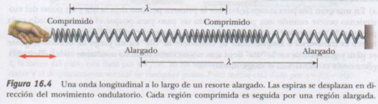

El concepto de onda es abstracto. Cuando se observa lo que se denomina una onda en el agua, lo que se ve es un reacomodo de la superficie del agua. Sin el agua, no habria onda. Una onda desplaz´andose sobre una cuerda no existiria sin la cuerda. Las ondas sonoras no podr´ian viajar a trav´es del aire si no hubiera mole´eculas de aire. En casos que implican ondas mec´anicas, o que se interpreta como una onsa corresponde a la propagaci´on de una perturbaci´on a trave´es de un medio.
Las ondas mec´anicas vistas en este capitulo requieren:
En la siguiente imagen se podra dar una mejor explicacion a lo que es una onda viajera.

Una onda viajera que causa que las part´iculas del medio perturbado se muevan perpendiculares al movimiento de la onda se conoce como onda transversal
Una onda viajera que ocasiona que las part´iculas del medio se muevan paralelas a la direcci´on del movimiento ondulatorio se conoce como onda longitudinal
En la imagen (a) podemos observar que el pulso se mueve a lo largo del eje x y el desplazamiento transversal de la cuerda se mide a lo largo del eje y.
En la imagen (b) podemos ver que la forma y posici´on del pulso en el tiempo t=0. En este tiempo, la forma del pulso, sin importar cua´al pueda ser, puede representarse como y=f(x)
Puesto que la rapidez del pulso de onsa es (v), ´este viaja hacia la derecha una distancia (vt) en un tiempo (t). si la forma del pulso de onda no cambia con el tiempo, se puede representar la cunci´on de onda (y) para todos los tiempos despu´es de t=0. Medida en un marco de referencia estacionario con el origen en 0, la funci´on de onda es: y=f(x-vt)
Si el pulso de onda viaja hacia la izquierda el desplazamiento de la cuerda es: y=f(x+vt)